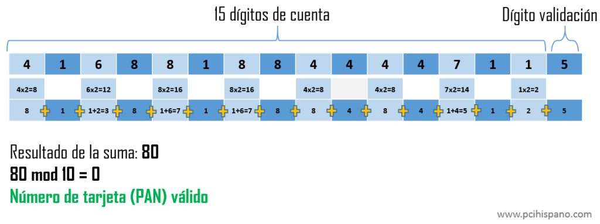

Número de tarjeta
1234 5678 9012 3456
Nombre de tarjeta
Maria Villa
Algoritmo de Luhn
Fue creado por el ingeniero informático Hans Peter Luhn, con el fin de validar posibles errores a la hora de la transcripción de una secuencia de números (cambiar un número por otro o identificar posibles intercambios de dígitos). Este algoritmo está basado en el principio del módulo aritmético (suma matemática mod-10) que permitía la identificación de errores durante la digitación o transmisión de una una cantidad considerable de números entre una fuente y otra.
¿Cómo funciona?
Para generar el dígito de verificación empleando el algoritmo de Luhn se deben seguir estos pasos:
-En una secuencia de dígitos dada, el dígito de verificación será el último valor, que en principio se desconoce.
-Partiendo de esa última posición, se multiplica cada dígito de posición par (contando desde la derecha) por dos. Si el resultado es un número de dos dígitos, entonces se suman estos dos valores.
-Posteriormente, se suman todos los dígitos obtenidos.
-El dígito de verificación es el número que se obtiene como residuo después de dividir ese resultado entre 10 (que es lo que en matemáticas se denomina mod-10). En otras palabras, el dígito de verificación es el número que debe agregarse a este resultado para hacer el siguiente múltiplo de 10.
